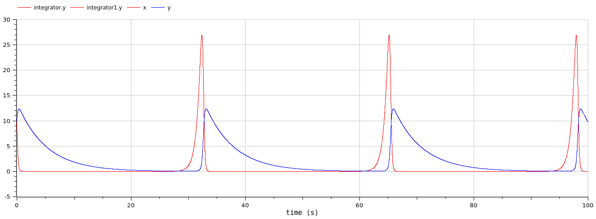
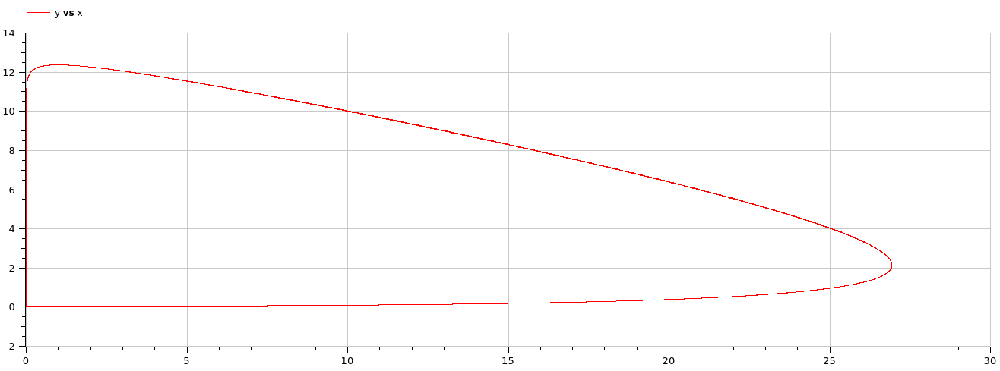
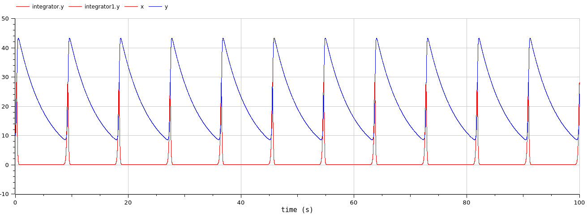
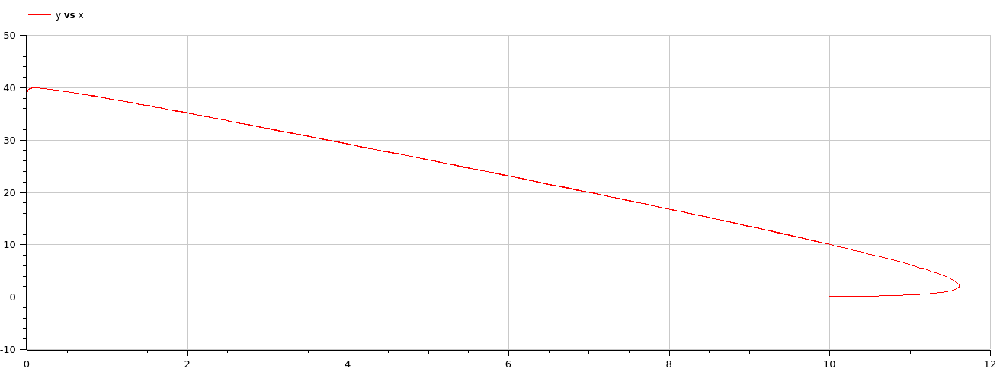
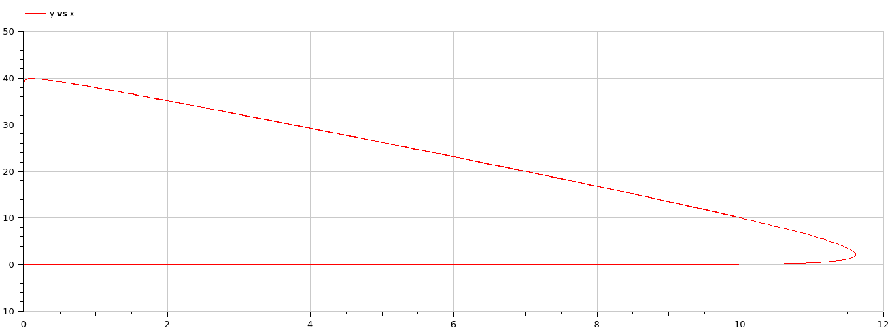

Introduction
This report contains a lot of code snippets. These could be outdated, but the files corresponding to these snippets are always up-to date and contain the latest working version.
Lotka-Volterra
Does this system stabilize? Why (not)? How can you tell?No, it is a cyclic system, so it will never stabilize. This is easy to see in the parametric graph, where it would converge(spiral inward) to a certain point if it were to stabilize at some point.
However, most integrators will actually converge in practice after a very long time, probably due to numerical error. Here is an example of the ircsko integrator that simulated 10 000 years.
We also tried playing with the integration parameters and select different methods. All these simulations were executed with the block diagram.
The following graphs were obtained with the Rungekutta integration method.

The following graphs are calculated with the dassl integration method. The outlier is due to the start being higher for some reason and then never coming back to that point. Also, it is notable that the peaks of the prey are only 15 high compared to 25 for the rungekutta integration method.

Some integrators give very weird results, like SymSolvercc and Qss
These are the Lotka-Volterra charts using the text model. In order to account for the requested output of the model, we used the diagram editor to achieve this more quickly. x is the prey and y is the predator. We will now try to alter some of these parameters. We will do this by multiplying each of the parameters by 10 and leaving the others unchanged. Here is the code.
model LotkaVolterra
parameter Real alpha=1.5;
parameter Real beta=0.7;
parameter Real delta=0.2;
parameter Real gamma=0.2;
Modelica.Blocks.Interfaces.RealOutput x(start=10, fixed=true) annotation(
Placement(visible = true, transformation(origin = {110, 50}, extent = {{-10, -10}, {10, 10}},
rotation = 0), iconTransformation(origin = {110, 50}, extent = {{-10, -10}, {10, 10}}, rotation
= 0)));
Modelica.Blocks.Interfaces.RealOutput y(start=10, fixed=true) annotation(
Placement(visible = true, transformation(origin = {110, -48}, extent = {{-10, -10}, {10, 10}},
rotation = 0), iconTransformation(origin = {110, -50}, extent = {{-10, -10}, {10, 10}}, rotation
= 0)));
equation
der(x) = alpha*x-beta*x*y;
der(y) = delta*x*y-gamma*y;
annotation(
uses(Modelica(version = "3.2.3")));
end LotkaVolterra;>
We take the red graph or the x-variable as the prey and the blue graph or the y-variable as the predator. In the parametric plot the x-axis is the prey and the y-axis the predator.
 These are the graphs with alpha = 15. We can clearly see that the frequency of the rising and falling of the predator and prey has increased significantly. The peaks of both predator and prey are visibly higher. The falloff in predator and prey is quick, and the spikes of the prey are quite short-lived. If we take the parametric plot into account we see that only the prey will closely reach zero.

These are the graphs with beta = 7. Both the parametric and time quantity plot do not seem periodic, but this could be because of the simulation time being too short. Nonetheless, we can still see that the maximum attained values for both predators and preys will probably not exceed the initial values of 10 by much. The population of the predators also decreases slower than the population of the prey, which drop 'instantly'.

These are the graphs with delta = 2. Here again we can see that there is a period, but it looks quite large as if it were the same as the parameter beta. On the other hand we have the preys who have significantly smaller population than the predators. Compared to the initial graph of the Lotka-Volterra equations we can see that the predators are more numerous. Lastly we can also notice that the population also almost flat-lines between cycles.
 

These are the graphs with gamma = 2. The frequency has risen significantly when increasing this parameter, therefore the population will rise and fall quicker than with a lower gamma. The predator population never exceeds 10, which is in stark contrast with the preys which achieve numbers of up to 40. None of the populations will reach or come close to 0 in the displayed curves.


We can conclude that both parameters, delta and beta, decrease the cycle of the population quicker than the other two parameters, alpha and gamma. While beta doesn't seem to adapt the population totals, parameters alpha and delta seem to increase the population of the predators and only beta seems to increase the population of the preys.
PRT
Part 1: Look-up model
The image associated with the look-up table for 300 seconds.
model step1
output Real vel(start=0, fixed=true);
equation
vel = if (time > 10) then 0 elseif (time > 170) then 10 elseif (time > 200) then 8 elseif (time > 260) then 18 else 12;
annotation(experiment(StopTime=500));
end step1;
We needed to use a piecewise evaluation to make modelica give us the correct output, as described in the look-up table.
Part 2: Plant model
model CustomPlant
Real v_psgr(start = 0);
Real x_trolley(start = 0);
parameter Real m_psgr(start = 1);
parameter Real m_trolley(start = 1);
parameter Real k(start = 0);
parameter Real c(start = 0);
parameter Real C_D(start = 0);
parameter Real p(start = 0);
parameter Real A(start = 0);
input Modelica.Blocks.Interfaces.RealInput F_traction(start = 0) annotation(
Placement(visible = true, transformation(origin = {-100, 0}, extent = {{-20, -20}, {20,
20}},
rotation = 0), iconTransformation(origin = {-120, 0}, extent = {{-20, -20}, {20, 20}},
rotation
= 0)));
output Modelica.Blocks.Interfaces.RealOutput v_trolley(start = 0) annotation(
Placement(visible = true, transformation(origin = {110, 50}, extent = {{-10, -10}, {10,
10}},
rotation = 0), iconTransformation(origin = {110, 50}, extent = {{-10, -10}, {10, 10}},
rotation
= 0)));
output Modelica.Blocks.Interfaces.RealOutput x_psgr(start = 0) annotation(
Placement(visible = true, transformation(origin = {110, -50}, extent = {{-10, -10}, {10,
10}},
rotation = 0), iconTransformation(origin = {110, -50}, extent = {{-10, -10}, {10, 10}}, rotation
= 0)));
equation
der(v_psgr) = (-k * x_psgr - c * v_psgr - m_psgr * ((F_traction -
.5*p*v_trolley^2*C_D*A)/(m_trolley + m_psgr)))/m_psgr;
der(v_trolley) = (F_traction - .5 * p * v_trolley^2 * C_D * A) / (m_trolley + m_psgr);
der(x_psgr) = v_psgr;
der(x_trolley) = v_trolley;
end CustomPlant;
For this part the goal was to convert the equations we received into a plant, which had $F_{traction}$ as input parameter. There were 2 output parameters we should take into account for the plant model. These are the $v_{trolley}$ and $x_{psgr}$. Alongside these models we have some parameters that are fixed during the simulations, but can be adjusted as they are parameters defined as non-fixed in the model.
First we will discuss the input parameter $F_{traction}$ in how this is modeled and made accessible through an interface in OMEdit. We've done this through the icon (which allows us to change the look of a custom model block) and diagram view (which contains the internal circuitry). The same has been done for $v_{trolley}$ and $x_{psgr}$. For the parameters, we used the text editor in OMEdit. The only thing we needed to change was to put the keyword parameter before the variable.
The last part was creating the equations in the OMEdit tool. We did this in the text mode since it was simpler than creating a whole circuit which would be probably overly complicated. [insert explanation of the equations]
Part 3: Bang-Bang controller + PRT with Bang-Bang controller
model PRT_system
Modelica.Blocks.Math.Product product annotation(
Placement(visible = true, transformation(origin = {-10, 30}, extent = {{-10, -10}, {10, 10}},
rotation = 180)));
Modelica.Blocks.Sources.Constant negative(k = -1) annotation(
Placement(visible = true, transformation(origin = {50, 50}, extent = {{-10, -10}, {10, 10}},
rotation = 180)));
Modelica.Blocks.Math.MultiSum multiSum(nu = 2) annotation(
Placement(visible = true, transformation(origin = {-4, -30}, extent = {{-6, -6}, {6, 6}},
rotation = 0)));
LookUp lookUp annotation(
Placement(visible = true, transformation(origin = {-50, -30}, extent = {{-10, -10}, {10, 10}},
rotation = 0)));
CustomPlant customPlant(A = 9.12, C_D = 0.6, c = 150, k = 300, m_psgr = 77, m_trolley = 2376, p
= 1.2) annotation(
Placement(visible = true, transformation(origin = {50, 10}, extent = {{-10, -10}, {10, 10}},
rotation = 180)));
BangBangController bangBangController(d_max = 1, d_min = -1, g = 2000) annotation(
Placement(visible = true, transformation(origin = {30, -30}, extent = {{-10, -10}, {10, 10}},
rotation = 0)));
equation
connect(negative.y, product.u2) annotation(
Line(points = {{39, 50}, {2, 50}, {2, 36}}, color = {0, 0, 127}));
connect(product.y, multiSum.u[1]) annotation(
Line(points = {{-21, 30}, {-31, 30}, {-31, -26.875}, {-11, -26.875}, {-11, -30}}, color = {0, 0,
127}));
connect(lookUp.v_ideal, multiSum.u[2]) annotation(
Line(points = {{-39, -30}, {-7, -30}}, color = {0, 0, 127}));
connect(bangBangController.F, customPlant.F_traction) annotation(
Line(points = {{41, -30}, {68, -30}, {68, 10}, {62, 10}}, color = {0, 0, 127}));
connect(multiSum.y, bangBangController.u) annotation(
Line(points = {{3.02, -30}, {18, -30}}, color = {0, 0, 127}));
connect(product.u1, customPlant.v_trolley) annotation(
Line(points = {{2, 24}, {20, 24}, {20, 5}, {40, 5}, {40, 6}}, color = {0, 0, 127}));
annotation(
experiment(StopTime = 300),
uses(Modelica(version = "3.2.3")));
end PRT_system;
For this part we used the diagram tool, and modified the previous input and output ports of the plant, bangBangController and lookUp. In order to make them compatible with the circuit. Making this the graphical way, would make replacing and fixing individual blocks of the circuit much quicker. The PRT system is designed in the exact same way as shown in the task.
Part 4: Simulation

The max positive displacement due to acceleration is around 0.17 while the negative is -0.23. We can conclude that the passengers will not fall.
Task 5: Experimenting with parameters & replacing if with when
Dmin and Dmax define the range in which no action is taken. So the value will always oscillate within this range. On the second image we can see if we set the max to zero, the function oscillates only under the target function.

g defines the force or slope with which the value oscillates. If this value is higher it oscillates faster. The first image depicts a low g value while the second one is much higher.

 What happens if you change the if-statements to when-statements, or vice-versa?
What happens if you change the if-statements to when-statements, or vice-versa?
Our codebase doesn't contain if-statements technically, only piecewise constructors. Due to this, only a theoretical explanation will be given.
A when will only execute the code the moment the event becomes active, meaning only when the value reaches the threshold it will execute the statement. If it were allowed to use when statements in this code fragment this wouldn't change anything. Using the if method, each iteration we set active to true or false while using when we only set active once each time a threshold is exceeded. Which could be more efficient.
active = if u > d_max then true elseif u < d_min then false else pre(active);
Our other line calculating the force would behave differently if changed to when as the force would be 0 most of the time. The estimation would oscillate around d_max continuously as at that moment the event is triggered again and again.
F = if active then g else 0;
Task 6: PRT system with PID controller


We can see that the passengers barely won't fall using the integrated PID-controller as the displacement stays withing the allowed boundaries of [-0.35, 0.35]. The second image is added for completeness. Showing the ideal and actual velocity.
Task 7 & 8: Optimize parameters & report
To find the optimal value we opted for an automated approach. For this we had to figure out two things:
- The cost/evaluation function.
- A way to find the minimum given this function.
As a cost function we used a simple least squares method on the speed difference with a check to reject samples where people fell. Which can be seen in the method below.
def least_squares_speed(rows) -> Optional[float]:
accumulator = 0
for row in rows:
x_psgr = float(row['customPlant.x_psgr'])
v_trolley = float(row['customPlant.v_trolley'])
v_ideal = float(row['lookUp.v_ideal'])
if abs(x_psgr) > 0.35:
return None
accumulator += (v_trolley - v_ideal) ** 2
return accumulator
We also considered alternate cost functions, which maybe also minimize x_psgr but we decided against it because it would most likely make the trolley a lot slower.
To find the minimum we opted to implement a simple hill-climber. To avoid getting stuck in local minima we use multiple starting positions. The hill climb function looks like this.
def hill_climb(start: Point, cost_fn):
c_value = evaluate(start, cost_fn)
c_sample = start
c_size = START_STEP_SIZE
c_step = 0
while c_size > START_STEP_SIZE / 100:
c_step += 1
neighbours = calc_neighbours(c_sample, c_size)
values = [evaluate(n, cost_fn) for n in neighbours]
index = np.argmin(values)
# we add an EPS to avoid bouncing back and forward the whole time
if values[index] < c_value - EPS:
c_sample = neighbours[index]
c_value = values[index]
else:
c_size = c_size / 2
print("step", c_step, ":", c_sample, "->", c_value)
return c_sample, c_value
The entire Python script can be read here.
This elementary hill climber will check it's direct neighbours (in all 3 directions, so 6 evaluations) with an offset of c_step when none of its neighbours have a lower value (probably indicating that it is close to a local minimum) it will decrease its step size further. The algorithm halts when a certain lower bound on the step size is reached meaning we have enough accuracy.
This algorithm is not smart in any way and will obviously miss a lot of details. We used this simple approach to get an estimate, to get better results and better performance more complex algorithms should be used.
We then ran this function 100 times with random starting positions within the given range. This gave us the following optimal parameters.
k = 329.3795484078204
ti = 66.35465944290725
td = 0.07505208070216672
Which gives a cost/value of 1707.4864946354312. The graph for these values looks like this.

The csv for this image can be found here
On the first section we see that the ideal speed is approached very nicely. And on the second and third change it quickly accelerates and decelerates.
The highest value for x_psgr is on the first change, it is exactly 0.349977. In a real environment one would obviously add some safety margin as to avoid people falling.
It is important to note that this is using the dassl integrator. We also had to remove negative values from the range of $K_d$ as it made some assertion fail inside modelica.